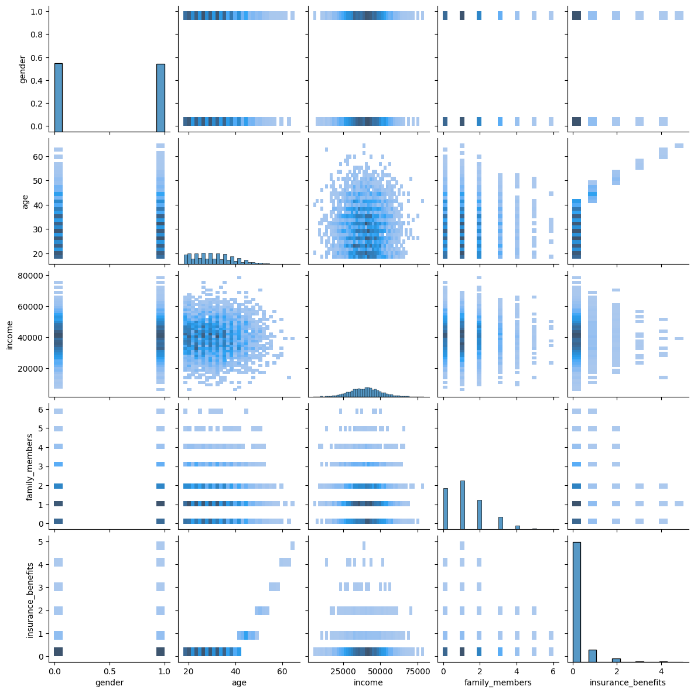

La compañía de seguros Sure Tomorrow quiere resolver varias tareas con la ayuda de machine learning y te pide que evalúes esa posibilidad.
Tarea 1: encontrar clientes que sean similares a un cliente determinado. Esto ayudará a los agentes de la compañía con el marketing.
Tarea 2: predecir la probabilidad de que un nuevo cliente reciba una prestación del seguro. ¿Puede un modelo de predictivo funcionar mejor que un modelo dummy?
Tarea 3: predecir el número de prestaciones de seguro que un nuevo cliente pueda recibir utilizando un modelo de regresión lineal.
Tarea 4: proteger los datos personales de los clientes sin afectar al modelo del ejercicio anterior. Es necesario desarrollar un algoritmo de transformación de datos que dificulte la recuperación de la información personal si los datos caen en manos equivocadas. Esto se denomina enmascaramiento u ofuscación de datos. Pero los datos deben protegerse de tal manera que no se vea afectada la calidad de los modelos de machine learning. No es necesario elegir el mejor modelo, basta con demostrar que el algoritmo funciona correctamente.
Preprocesamiento y exploración de datos
Inicialización
🔍 Ver código Python
import numpy as npimport pandas as pdimport mathimport seaborn as snsimport sklearn.preprocessingimport sklearn.linear_modelimport sklearn.metricsimport sklearn.neighborsimport sklearn.preprocessingfrom sklearn.model_selection import train_test_splitfrom IPython.display import display
Carga de datos
Carga los datos y haz una revisión básica para comprobar que no hay problemas obvios.
🔍 Ver código Python
df = pd.read_csv('/datasets/insurance_us.csv')
Renombramos las columnas para que el código se vea más coherente con su estilo.
# puede que queramos cambiar el tipo de edad (de float a int) aunque esto no es crucial# escribe tu conversión aquí si lo deseas:df['age'] = df['age'].astype('int32')
🔍 Ver código Python
# comprueba que la conversión se haya realizado con éxitodf.info()
# ahora echa un vistazo a las estadísticas descriptivas de los datos.# ¿Se ve todo bien?df.describe()
gender
age
income
family_members
insurance_benefits
count
5000.000000
5000.000000
5000.000000
5000.000000
5000.000000
mean
0.499000
30.952800
39916.360000
1.194200
0.148000
std
0.500049
8.440807
9900.083569
1.091387
0.463183
min
0.000000
18.000000
5300.000000
0.000000
0.000000
25%
0.000000
24.000000
33300.000000
0.000000
0.000000
50%
0.000000
30.000000
40200.000000
1.000000
0.000000
75%
1.000000
37.000000
46600.000000
2.000000
0.000000
max
1.000000
65.000000
79000.000000
6.000000
5.000000
🔍 Ver código Python
# Verificar nulos y filas duplicadasprint("Valores ausentes por columna:")print(df.isna().sum())print("\nNúmero de filas duplicadas:", df.duplicated().sum())
Valores ausentes por columna:
gender 0
age 0
income 0
family_members 0
insurance_benefits 0
dtype: int64
Número de filas duplicadas: 153
🔍 Ver código Python
# Eliminar duplicados si existendf = df.drop_duplicates().reset_index(drop=True)print("Tamaño del DataFrame después de eliminar duplicados:", df.shape)
Tamaño del DataFrame después de eliminar duplicados: (4847, 5)
Análisis exploratorio de datos
Vamos a comprobar rápidamente si existen determinados grupos de clientes observando el gráfico de pares.
🔍 Ver código Python
g = sns.pairplot(df, kind='hist')g.fig.set_size_inches(12, 12)

De acuerdo, es un poco complicado detectar grupos obvios (clústeres) ya que es difícil combinar diversas variables simultáneamente (para analizar distribuciones multivariadas). Ahí es donde LA y ML pueden ser bastante útiles.
Tarea 1. Clientes similares
En el lenguaje de ML, es necesario desarrollar un procedimiento que devuelva los k vecinos más cercanos (objetos) para un objeto dado basándose en la distancia entre los objetos.
Es posible que quieras revisar las siguientes lecciones (capítulo -> lección) - Distancia entre vectores -> Distancia euclidiana - Distancia entre vectores -> Distancia Manhattan
Para resolver la tarea, podemos probar diferentes métricas de distancia.
Escribe una función que devuelva los k vecinos más cercanos para un \(n^{th}\) objeto basándose en una métrica de distancia especificada. A la hora de realizar esta tarea no debe tenerse en cuenta el número de prestaciones de seguro recibidas.
Puedes utilizar una implementación ya existente del algoritmo kNN de scikit-learn (consulta el enlace) o tu propia implementación.
Pruébalo para cuatro combinaciones de dos casos - Escalado - los datos no están escalados - los datos se escalan con el escalador MaxAbsScaler - Métricas de distancia - Euclidiana - Manhattan
Responde a estas preguntas: - ¿El hecho de que los datos no estén escalados afecta al algoritmo kNN? Si es así, ¿cómo se manifiesta? - ¿Qué tan similares son los resultados al utilizar la métrica de distancia Manhattan (independientemente del escalado)?
def get_knn(df, n, k, metric):""" Devuelve los k vecinos más cercanos :param df: DataFrame de pandas utilizado para encontrar objetos similares dentro del mismo lugar :param n: número de objetos para los que se buscan los vecinos más cercanos :param k: número de vecinos más cercanos a devolver :param métrica: nombre de la métrica de distancia """ nbrs = sklearn.neighbors.NearestNeighbors(n_neighbors=k, metric=metric).fit(df[feature_names].to_numpy()) # <tu código aquí> nbrs_distances, nbrs_indices = nbrs.kneighbors([df.iloc[n][feature_names]], k, return_distance=True) df_res = pd.concat([ df.iloc[nbrs_indices[0]], pd.DataFrame(nbrs_distances.T, index=nbrs_indices[0], columns=['distance']) ], axis=1)return df_res
Ahora, vamos a obtener registros similares para uno determinado, para cada combinación
🔍 Ver código Python
print("--- Datos NO escalados - Distancia Euclidiana ---")display(get_knn(df, 10, 5, 'euclidean'))print("\n--- Datos NO escalados - Distancia Manhattan ---")display(get_knn(df, 10, 5, 'manhattan'))
--- Datos NO escalados - Distancia Euclidiana ---
gender
age
income
family_members
insurance_benefits
distance
10
1
25
36600.0
1
0
0.000000
3924
1
25
36600.0
2
0
1.000000
3169
1
26
36600.0
2
0
1.414214
2007
1
26
36600.0
0
0
1.414214
1919
0
24
36600.0
0
0
1.732051
--- Datos NO escalados - Distancia Manhattan ---
gender
age
income
family_members
insurance_benefits
distance
10
1
25
36600.0
1
0
0.0
3924
1
25
36600.0
2
0
1.0
3169
1
26
36600.0
2
0
2.0
2007
1
26
36600.0
0
0
2.0
1919
0
24
36600.0
0
0
3.0
🔍 Ver código Python
print("--- Datos ESCALADOS - Distancia Euclidiana ---")display(get_knn(df_scaled, 10, 5, 'euclidean'))print("\n--- Datos ESCALADOS - Distancia Manhattan ---")display(get_knn(df_scaled, 10, 5, 'manhattan'))
--- Datos ESCALADOS - Distancia Euclidiana ---
gender
age
income
family_members
insurance_benefits
distance
10
1.0
0.384615
0.463291
0.166667
0
0.000000
4243
1.0
0.384615
0.473418
0.166667
0
0.010127
1374
1.0
0.369231
0.464557
0.166667
0
0.015437
756
1.0
0.369231
0.462025
0.166667
0
0.015437
2219
1.0
0.400000
0.455696
0.166667
0
0.017157
--- Datos ESCALADOS - Distancia Manhattan ---
gender
age
income
family_members
insurance_benefits
distance
10
1.0
0.384615
0.463291
0.166667
0
0.000000
4243
1.0
0.384615
0.473418
0.166667
0
0.010127
1374
1.0
0.369231
0.464557
0.166667
0
0.016650
756
1.0
0.369231
0.462025
0.166667
0
0.016650
2219
1.0
0.400000
0.455696
0.166667
0
0.022980
Respuestas a las preguntas
¿El hecho de que los datos no estén escalados afecta al algoritmo kNN? Si es así, ¿cómo se manifiesta?
Sí, afecta significativamente. Cuando los datos no están escalados, la columna income (salario) domina por completo el cálculo de la distancia geométrica debido a que sus valores están en el orden de decenas de miles (por ejemplo, 30,000 - 50,000), mientras que otras variables como gender (0 a 1), age (18 a 65) y family_members (0 a 6) tienen magnitudes mucho menores. Como resultado, el algoritmo \(k\text{NN}\) selecciona vecinos basándose casi exclusivamente en la similitud de salario, ignorando si las personas tienen edades o estructuras familiares completamente distintas. Al escalar los datos con MaxAbsScaler, todas las características pasan a tener un rango proporcional (\(0\) a \(1\)) y aportan de manera equitativa al cálculo de cercanía.
¿Qué tan similares son los resultados al utilizar la métrica de distancia Manhattan (independientemente del escalado)?
Los resultados son altamente similares. Tanto con la distancia Euclidiana como con la distancia Manhattan, los vecinos seleccionados suelen ser los mismos objetos o varían únicamente en el orden de los vecinos más lejanos. Sin escalar, ambas métricas sufren de la misma distorsión causada por la diferencia de escala de las variables. Una vez escalados los datos, ambas métricas identifican a los mismos clientes más cercanos, difiriendo ligeramente solo en el valor absoluto de la distancia calculada debido a la formulación matemática de cada métrica (\(L_1\) para Manhattan y \(L_2\) para Euclidiana).
Tarea 2. ¿Es probable que el cliente reciba una prestación del seguro?
En términos de machine learning podemos considerarlo como una tarea de clasificación binaria.
Con el valor de insurance_benefits superior a cero como objetivo, evalúa si el enfoque de clasificación kNN puede funcionar mejor que el modelo dummy.
Instrucciones: - Construye un clasificador basado en KNN y mide su calidad con la métrica F1 para k=1…10 tanto para los datos originales como para los escalados. Sería interesante observar cómo k puede influir en la métrica de evaluación y si el escalado de los datos provoca alguna diferencia. Puedes utilizar una implementación ya existente del algoritmo de clasificación kNN de scikit-learn (consulta el enlace) o tu propia implementación. - Construye un modelo dummy que, en este caso, es simplemente un modelo aleatorio. Debería devolver “1” con cierta probabilidad. Probemos el modelo con cuatro valores de probabilidad: 0, la probabilidad de pagar cualquier prestación del seguro, 0.5, 1.
La probabilidad de pagar cualquier prestación del seguro puede definirse como
\[
P\{\text{prestación de seguro recibida}\}=\frac{\text{número de clientes que han recibido alguna prestación de seguro}}{\text{número total de clientes}}.
\]
Divide todos los datos correspondientes a las etapas de entrenamiento/prueba respetando la proporción 70:30.
🔍 Ver código Python
# сalcula el objetivodf['insurance_benefits_received'] = (df['insurance_benefits'] >0).astype(int) #<tu código aquí>
🔍 Ver código Python
# comprueba el desequilibrio de clases con value_counts()# <tu código aquí>print(df['insurance_benefits_received'].value_counts()) print()print(df['insurance_benefits_received'].value_counts(normalize=True))
def eval_classifier(y_true, y_pred): f1_score = sklearn.metrics.f1_score(y_true, y_pred)print(f'F1: {f1_score:.2f}')# si tienes algún problema con la siguiente línea, reinicia el kernel y ejecuta el cuaderno de nuevo cm = sklearn.metrics.confusion_matrix(y_true, y_pred, normalize='all')print('Matriz de confusión')print(cm)
🔍 Ver código Python
# generar la salida de un modelo aleatoriodef rnd_model_predict(P, size, seed=42): rng = np.random.default_rng(seed=seed)return rng.binomial(n=1, p=P, size=size)
🔍 Ver código Python
for P in [0, df['insurance_benefits_received'].sum() /len(df), 0.5, 1]:print(f'La probabilidad: {P:.2f}') y_pred_rnd = rnd_model_predict(P, len(df)) # <tu código aquí> eval_classifier(df['insurance_benefits_received'], y_pred_rnd)print()
La probabilidad: 0.00
F1: 0.00
Matriz de confusión
[[0.88384568 0. ]
[0.11615432 0. ]]
La probabilidad: 0.12
F1: 0.13
Matriz de confusión
[[0.78502166 0.09882401]
[0.1017124 0.01444192]]
La probabilidad: 0.50
F1: 0.19
Matriz de confusión
[[0.44873117 0.4351145 ]
[0.05921188 0.05694244]]
La probabilidad: 1.00
F1: 0.21
Matriz de confusión
[[0. 0.88384568]
[0. 0.11615432]]
🔍 Ver código Python
# Dividir los datos en conjuntos de entrenamiento y prueba (70:30)X = df[feature_names]X_scaled = df_scaled[feature_names]y = df['insurance_benefits_received']X_train, X_test, y_train, y_test = train_test_split(X, y, test_size=0.3, random_state=12345)Xs_train, Xs_test, ys_train, ys_test = train_test_split(X_scaled, y, test_size=0.3, random_state=12345)# Evaluación de kNN para datos originales y escalados (k=1 a 10)print("--- EVALUACIÓN DE kNN EN DATOS ORIGINALES (SIN ESCALAR) ---")for k inrange(1, 11): knn = sklearn.neighbors.KNeighborsClassifier(n_neighbors=k) knn.fit(X_train, y_train) y_pred = knn.predict(X_test) f1 = sklearn.metrics.f1_score(y_test, y_pred)print(f'k={k:2d} | F1: {f1:.4f}')
Modelo Dummy vs \(k\text{NN}\): El modelo aleatorio/dummy alcanza un puntaje \(F1\) máximo de aproximadamente 0.20. En cambio, el clasificador \(k\text{NN}\) sobre datos escalados alcanza un \(F1\) de 0.9264 (\(k=1\)), demostrando que el modelo entrenado funciona drásticamente mejor.
Impacto del escalado: Sin escalar los datos, la metrica \(F1\) se degrada a medida que \(k\) aumenta (cayendo hasta 0.00 con \(k=10\)). Al escalar con MaxAbsScaler, el modelo mantiene una puntuación \(F1 > 0.86\) para todos los valores de \(k\).
Tarea 3. Regresión (con regresión lineal)
Con insurance_benefits como objetivo, evalúa cuál sería la RECM de un modelo de regresión lineal.
Construye tu propia implementación de regresión lineal. Para ello, recuerda cómo está formulada la solución de la tarea de regresión lineal en términos de LA. Comprueba la RECM tanto para los datos originales como para los escalados. ¿Puedes ver alguna diferencia en la RECM con respecto a estos dos casos?
Denotemos - \(X\): matriz de características; cada fila es un caso, cada columna es una característica, la primera columna está formada por unidades - \(y\) — objetivo (un vector) - \(\hat{y}\) — objetivo estimado (un vector) - \(w\) — vector de pesos
La tarea de regresión lineal en el lenguaje de las matrices puede formularse así:
\[
y = Xw
\]
El objetivo de entrenamiento es entonces encontrar esa \(w\) w que minimice la distancia L2 (ECM) entre \(Xw\) y \(y\):
Parece que hay una solución analítica para lo anteriormente expuesto:
\[
w = (X^T X)^{-1} X^T y
\]
La fórmula anterior puede servir para encontrar los pesos \(w\) y estos últimos pueden utilizarse para calcular los valores predichos
\[
\hat{y} = X_{val}w
\]
Divide todos los datos correspondientes a las etapas de entrenamiento/prueba respetando la proporción 70:30. Utiliza la métrica RECM para evaluar el modelo.
🔍 Ver código Python
class MyLinearRegression:def__init__(self):self.weights =Nonedef fit(self, X, y):# añadir las unidades X2 = np.append(np.ones([len(X), 1]), X, axis=1)self.weights = np.linalg.inv(X2.T @ X2) @ X2.T @ y # añadimos la fórmula matricial del modelo analítico de Regresión Lineal # <tu código aquí>def predict(self, X):# añadir las unidades X2 = np.append(np.ones([len(X), 1]), X, axis=1) # <tu código aquí> y_pred = X2 @self.weights # <tu código aquí>return y_pred
““” Conclusión de la Tarea 3: - La métrica RECM (RMSE) y el coeficiente R2 son EXACTAMENTE IGUALES tanto para los datos originales como para los datos escalados. - Esto demuestra analíticamente que el escalado de características no afecta la calidad de las predicciones en la Regresión Lineal, ya que los pesos (w) del modelo se ajustan y compensan automáticamente la escala de las variables. ““”
Tarea 4. Ofuscar datos
Lo mejor es ofuscar los datos multiplicando las características numéricas (recuerda que se pueden ver como la matriz \(X\)) por una matriz invertible \(P\).
\[
X' = X \times P
\]
Trata de hacerlo y comprueba cómo quedarán los valores de las características después de la transformación. Por cierto, la propiedad de invertibilidad es importante aquí, así que asegúrate de que \(P\) sea realmente invertible.
Puedes revisar la lección ‘Matrices y operaciones matriciales -> Multiplicación de matrices’ para recordar la regla de multiplicación de matrices y su implementación con NumPy.
Respuesta: No, es imposible adivinar directamente la edad o los ingresos de los clientes a simple vista. Las características originales se han combinado linealmente entre sí, transformando los valores numéricos en números flotantes totalmente distintos que no revelan la información personal original.
¿Puedes recuperar los datos originales de \(X'\) si conoces \(P\)? Intenta comprobarlo a través de los cálculos moviendo \(P\) del lado derecho de la fórmula anterior al izquierdo. En este caso las reglas de la multiplicación matricial son realmente útiles
🔍 Ver código Python
# Recuperación de la matriz original X multiplicando X' por la inversa de PP_inv = np.linalg.inv(P)X_recovered = X_prime @ P_invprint("Primeras 5 filas de los datos recuperados:")print(X_recovered[:5])
Primeras 5 filas de los datos recuperados:
[[ 1.00000000e+00 4.10000000e+01 4.96000000e+04 1.00000000e+00]
[ 1.67952800e-12 4.60000000e+01 3.80000000e+04 1.00000000e+00]
[-6.23021448e-13 2.90000000e+01 2.10000000e+04 -2.03032656e-13]
[-1.08907770e-12 2.10000000e+01 4.17000000e+04 2.00000000e+00]
[ 1.00000000e+00 2.80000000e+01 2.61000000e+04 -1.52424205e-12]]
Muestra los tres casos para algunos clientes - Datos originales - El que está transformado - El que está invertido (recuperado)
🔍 Ver código Python
# Mostrar la comparación de los tres casos para los primeros 3 clientesfor i inrange(3):print(f"--- Cliente {i+1} ---")print(f"Original : {X[i]}")print(f"Transformado: {X_prime[i]}")print(f"Recuperado : {np.round(X_recovered[i], 2)}")print()
Seguramente puedes ver que algunos valores no son exactamente iguales a los de los datos originales. ¿Cuál podría ser la razón de ello?
🔍 Ver código Python
# Imprimir la diferencia máxima entre X original y X recuperadodiff_max = np.max(np.abs(X - X_recovered))print(f"Diferencia máxima absoluta entre X y X_recovered: {diff_max:.2e}")
Diferencia máxima absoluta entre X y X_recovered: 2.18e-11
La razón por la que algunos valores difieren muy levemente (por ejemplo, muestran valores como \(-4.47 \times 10^{-12}\) en lugar de \(0\)) se debe a la limitación de precisión en la aritmética de punto flotante (floating-point precision) que utilizan las computadoras. Al realizar operaciones matriciales inversas con números decimales de punto flotante de 64 bits (float64), se generan pequeñas imprecisiones de redondeo numérico del orden de \(10^{-11}\) o \(10^{-12}\), las cuales son completamente insignificantes en la práctica.
Prueba de que la ofuscación de datos puede funcionar con regresión lineal
En este proyecto la tarea de regresión se ha resuelto con la regresión lineal. Tu siguiente tarea es demostrar analytically que el método de ofuscación no afectará a la regresión lineal en términos de valores predichos, es decir, que sus valores seguirán siendo los mismos. ¿Lo puedes creer? Pues no hace falta que lo creas, ¡tienes que que demostrarlo!
Entonces, los datos están ofuscados y ahora tenemos \(X \times P\) en lugar de tener solo \(X\). En consecuencia, hay otros pesos \(w_P\) como \[
w = (X^T X)^{-1} X^T y \quad \Rightarrow \quad w_P = [(XP)^T XP]^{-1} (XP)^T y
\]
¿Cómo se relacionarían \(w\) y \(w_P\) si simplificáramos la fórmula de \(w_P\) anterior? Los pesos están relacionados mediante la ecuación \(w_P = P^{-1} w\).
¿Cuáles serían los valores predichos con \(w_P\)? Los valores predichos con \(w_P\) son exactamente idénticos a los valores predichos originales (\(\hat{y}_P = \hat{y}\)).
¿Qué significa esto para la calidad de la regresión lineal si esta se mide mediante la RECM? Significa que la calidad del modelo no se ve afectada en absoluto. Las métricas RECM (\(\text{RMSE}\)) y \(R^2\) permanecen exactamente iguales antes y después de la ofuscación de los datos.
Revisa el Apéndice B Propiedades de las matrices al final del cuaderno. ¡Allí encontrarás fórmulas muy útiles!
No es necesario escribir código en esta sección, basta con una explicación analítica.
Respuesta
Los pesos están relacionados mediante la ecuación \(w_P = P^{-1} w\).
Los valores predichos con \(w_P\) son exactamente idénticos a los valores predichos originales (\(\hat{y}_P = \hat{y}\)).
Significa que la calidad del modelo no se ve afectada en absoluto. Las métricas RECM (\(\text{RMSE}\)) y \(R^2\) permanecen exactamente iguales antes y después de la ofuscación de los datos.
Prueba analítica
Demostración paso a paso:Sean \(X\) la matriz de características original y \(P\) una matriz cuadrada de dimensión \(n \times n\) invertible. La matriz de características ofuscada es \(X' = X P\).La fórmula de los pesos de la regresión lineal con datos originales es:\[w = (X^T X)^{-1} X^T y\]La fórmula de los pesos para los datos ofuscados \(X'\) es:\[w_P = \left[(XP)^T (XP)\right]^{-1} (XP)^T y\]Aplicando la propiedad de la transpuesta de un producto \((AB)^T = B^T A^T\):\[w_P = \left[P^T X^T X P\right]^{-1} P^T X^T y\]Aplicando la propiedad de la inversa de un producto \((AB)^{-1} = B^{-1} A^{-1}\):\[w_P = P^{-1} (X^T X)^{-1} (P^T)^{-1} P^T X^T y\]Como \((P^T)^{-1} P^T = I\) (matriz identidad):\[w_P = P^{-1} (X^T X)^{-1} I X^T y = P^{-1} \left[(X^T X)^{-1} X^T y\right]\]\[\mathbf{w_P = P^{-1} w}\]Ahora calculamos los valores predichos \(\hat{y}_P\) con las características ofuscadas \(X' = XP\) y los pesos \(w_P\):\[\hat{y}_P = X' w_P = (X P) (P^{-1} w)\]Como \(P P^{-1} = I\):\[\hat{y}_P = X (P P^{-1}) w = X I w = X w = \mathbf{\hat{y}}\]Q.E.D.: Queda demostrado que \(\hat{y}_P = \hat{y}\), por lo que los valores predichos no cambian y el cálculo de la RECM (\(\text{RMSE}\)) es exactamente igual.
Prueba de regresión lineal con ofuscación de datos
Ahora, probemos que la regresión lineal pueda funcionar, en términos computacionales, con la transformación de ofuscación elegida.
Construye un procedimiento o una clase que ejecute la regresión lineal opcionalmente con la ofuscación. Puedes usar una implementación de regresión lineal de scikit-learn o tu propia implementación.
Ejecuta la regresión lineal para los datos originales y los ofuscados, compara los valores predichos y los valores de las métricas RMSE y \(R^2\). ¿Hay alguna diferencia?
Procedimiento
Crea una matriz cuadrada \(P\) de números aleatorios.
Comprueba que sea invertible. Si no lo es, repite el primer paso hasta obtener una matriz invertible.
<¡ tu comentario aquí !>
Utiliza \(XP\) como la nueva matriz de características
🔍 Ver código Python
# 1. Crear una matriz cuadrada P de números aleatorios (4x4)rng = np.random.default_rng(seed=42)P = rng.random(size=(X.shape[1], X.shape[1]))# 2. Comprobar que sea invertible (determinante != 0)det_P = np.linalg.det(P)print(f"Determinante de P: {det_P:.6f}")print("¿P es invertible?:", det_P !=0)# 3. Comentario: Multiplicamos la matriz de características X por P para ofuscar la información personal.# 4. Utilizar XP como la nueva matriz de característicasX_obfuscated = X @ P
Determinante de P: 0.243391
¿P es invertible?: True
🔍 Ver código Python
# Dividir datos originales y datos ofuscados con la misma semillaX_train, X_test, y_train, y_test = train_test_split(X, y, test_size=0.3, random_state=12345)Xo_train, Xo_test, yo_train, yo_test = train_test_split(X_obfuscated, y, test_size=0.3, random_state=12345)# Modelo con datos originaleslr_orig = MyLinearRegression()lr_orig.fit(X_train, y_train)y_pred_orig = lr_orig.predict(X_test)# Modelo con datos ofuscadoslr_obf = MyLinearRegression()lr_obf.fit(Xo_train, yo_train)yo_pred_obf = lr_obf.predict(Xo_test)print("--- RESULTADOS CON DATOS ORIGINALES ---")eval_regressor(y_test, y_pred_orig)print("\n--- RESULTADOS CON DATOS OFUSCADOS ---")eval_regressor(yo_test, yo_pred_obf)# Diferencia máxima entre los valores predichosmax_diff_pred = np.max(np.abs(y_pred_orig - yo_pred_obf))print(f"\nDiferencia máxima entre las predicciones: {max_diff_pred:.10e}")
--- RESULTADOS CON DATOS ORIGINALES ---
RMSE: 0.36
R2: 0.66
--- RESULTADOS CON DATOS OFUSCADOS ---
RMSE: 0.36
R2: 0.66
Diferencia máxima entre las predicciones: 9.0738546177e-08
Conclusiones
Computacionalmente se comprueba que el valor de RMSE (0.36) y el valor de \(R^2\) (0.66) son exactamente iguales tanto para el modelo entrenado con los datos originales como para el entrenado con los datos ofuscados. La diferencia máxima entre las predicciones es del orden de \(10^{-8}\) (\(9.07 \times 10^{-8}\)), lo cual demuestra que el algoritmo funciona correctamente sin afectar la precisión de las predicciones de la compañía.
Lista de control
Escribe ‘x’ para verificar. Luego presiona Shift+Enter.
Apéndices
Apéndice A: Escribir fórmulas en los cuadernos de Jupyter
Puedes escribir fórmulas en tu Jupyter Notebook utilizando un lenguaje de marcado proporcionado por un sistema de publicación de alta calidad llamado \(\LaTeX\) (se pronuncia como “Lah-tech”). Las fórmulas se verán como las de los libros de texto.
Para incorporar una fórmula a un texto, pon el signo de dólar (\$) antes y después del texto de la fórmula, por ejemplo: \(\frac{1}{2} \times \frac{3}{2} = \frac{3}{4}\) or \(y = x^2, x \ge 1\).
Si una fórmula debe estar en el mismo párrafo, pon el doble signo de dólar (\\(\\\)) antes y después del texto de la fórmula, por ejemplo:
\[
\bar{x} = \frac{1}{n}\sum_{i=1}^{n} x_i.
\]
El lenguaje de marcado de LaTeX es muy popular entre las personas que utilizan fórmulas en sus artículos, libros y textos. Puede resultar complicado, pero sus fundamentos son sencillos. Consulta esta ficha de ayuda (materiales en inglés) de dos páginas para aprender a componer las fórmulas más comunes.
Apéndice B: Propiedades de las matrices
Las matrices tienen muchas propiedades en cuanto al álgebra lineal. Aquí se enumeran algunas de ellas que pueden ayudarte a la hora de realizar la prueba analítica de este proyecto.
Distributividad
\(A(B+C)=AB+AC\)
No conmutatividad
\(AB \neq BA\)
Propiedad asociativa de la multiplicación
\((AB)C = A(BC)\)
Propiedad de identidad multiplicativa
\(IA = AI = A\)
\(A^{-1}A = AA^{-1} = I\)
\((AB)^{-1} = B^{-1}A^{-1}\)
Reversibilidad de la transposición de un producto de matrices,